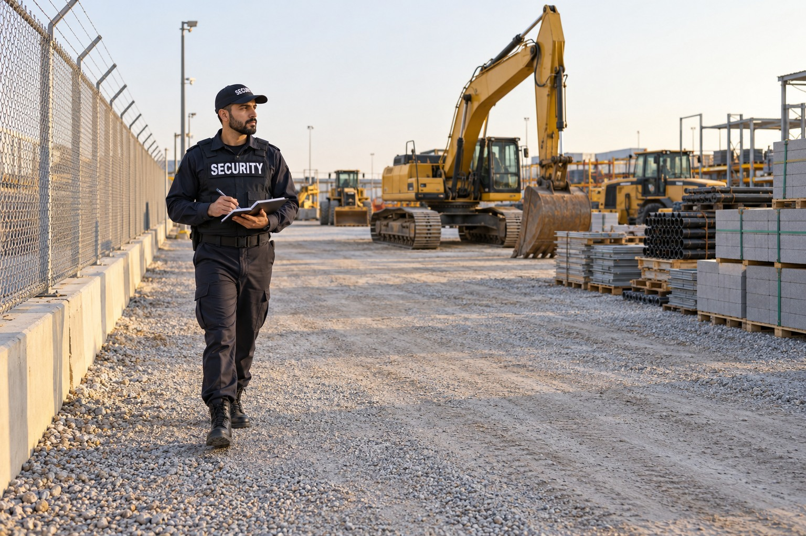

Construction Sites

A construction project may involve machinery, stored materials, temporary facilities and areas that are not open to the public. A security assignment gives the contractor a defined role focused on observation and communication about those property concerns. The guard is not a substitute for the site superintendent or the people responsible for construction operations.
Protecting the Property Behind the Project
Paradigm supports inquiries involving different project types and stages. A site with active crews has different expectations from a location where work has paused. The service assessment identifies the property and responsibilities involved without publishing information about vulnerable areas or details of the site’s security arrangements.
Equipment, Materials and Authorized Access
Officers can observe the areas included in the assignment and communicate concerns involving equipment, materials or unauthorized presence. The service can also include support for authorized crew and delivery access as agreed with the site representative. Those responsibilities should remain distinct from inventory accounting, equipment maintenance and worksite supervision.
The fact that a project has fencing or cameras does not itself define the security officer’s role. Paradigm reviews what the client expects from personnel and how that role relates to the existing property arrangements. The public service description explains the responsibilities without sharing methods, coverage patterns or site specific procedures.
Incident Records and Contractor Communication
Construction site security can document incidents and observations relevant to the assignment. That record can help the contractor review a reported theft, damage or unauthorized entry concern. Any decisions about an insurance claim or a legal matter belong to the client and the appropriate professionals. Security reporting does not guarantee a claim outcome.
The service includes communication with the authorized site contact and appropriate responders when necessary. BSIS publishes California security guard registration requirements. The consultation confirms the assignment responsibilities and personnel suitability rather than assuming that every security post is equivalent to every other job site.
Construction Security Across Los Angeles and San Bernardino Counties
Paradigm serves construction clients across Los Angeles County and San Bernardino County. Projects may involve a single site, a development containing several work areas or multiple locations under the same contractor. Each assignment should have a clear relationship with the authorized project representative.
Contact Paradigm to describe the project and the security concern affecting your work. We will review property observation, access responsibilities and incident communication as relevant to the site. The details of your equipment, site arrangements and proposed coverage remain part of the private consultation.